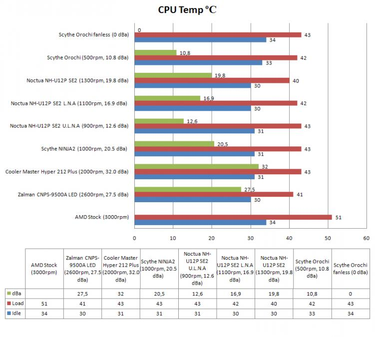

Scythe Orochi aušintuvas
Scythe Orochi - išskirtinis kompanijos Scythe siūlomas CPU aušintuvas. Šis aušintuvas sukurtas naudoti jį Fanless rėžimu - nenaudojant ventiliatorių. Savo didelių gabaritų bei 10 heatpipe šiluminių vamzdelių dėka Orochi fanless rėžime turėtų ataušinti net ir Quad Core procesorius. Aušintuvo koplekte pridedamas 140mm tylus ventiliatorius, kuris, reikalui esant, gali dar labiau pagerinti aušinimo rezultatus. modding.lt jau apžvelgė vieną kompanijos Scythe fanless aušintuvą - tai NINJA 2. Jo aušinimo rezultatai buvo puikūs. Tikiuosi, jog Orochi aušintuvo aušinimo rezultatai bus dar geresni, kadangi aušintuvas gerokai didesnis ir turi didesnį plotą šilumos išspinduliavimui.
Žvilgsnis iš arčiau
Scythe Orochi pakuotė tokia kaip ir daugelio Scythe aušintuvų: priekinėje dalyje pavaizduotas Quad Core Ready logotipas, ypatumai, aušintuvo paveiksliukas. Šoninėje dalyje nurodyti palaikomi socket bei trumpai aprašomas 140 mm ventiliatorius bei Fanless rėžimas. Kitoje šoninėje dalyje nurodyti montavimui skirti priedai skirtingiems socket bei aušintuvo specifikacijos 6 užsienio kalbomis. Galinėje pakuotės dalyje pateiktos aušintuvo naudojimo instrukcijos bei kompanijos rekvizitai.
Pakuotės viduje randame:
- Scythe Orochi aušintuvą
- tvirtinimo detales 754/939/940/AM2/+AM2/AM3 ir 478/LGA775
- termopastą
- 2 vnt. rėmelių ventiliatoriui tvirtinti
- manual - vartotojo knygelę
Specifikacijos
- Suderinamumas: socket 754/939/940/AM2/AM2+/AM3 ir 478/LGA775 bei LGA1366 (panaudojus papildomus laikiklius)
- Išmatavimai: bendri 120(ilgis) x 194(plotis) x 155(aukštis) mm
- Išmatavimai: aušintuvo 140(ilgis) x 140(plotis) x 25(aukštis) mm
- Ventiliatoriaus apsisukimai: 500 rpm (±10%)
- Ventiliatoriaus triukšmo lygis: 10.8 dBA
- Oro srautas: 29.39 CFM = 49 m³/h
- Svoris: 1155 g (radiatorius) + 130 g (ventiliatorius)
- Radiatoriaus medžiagos: nikeliuotas varis
Scythe Orochi aušintuvas komplektuojamas su 140 mm ventiliatoriumi. Besisukdamas 500 rpm greičiu jis sukuria 49 m³/h oro srautą, skleisdamas vos 10.8 dBA triukšmo lygį - puikus rodiklis. Ventiliatoriaus parametrai panašūs į Noctua NF-P14 FLX ventiliatoriaus parametrus, tačiau pastarasis, veikdamas 500 rpm rėžime, būtų truputį tylesnis. Lyginant sukuriamus oro srautus - Scythe 140 mm ventiliatorius nenusileidžia Noctua NF-P14 FLX charakteristikoms.
Scythe Orochi konstrukcija: aušintuvas pagamintas panaudojant 10 heatpipe šiluminių vamzdelių. Vamzdeliai nuo radiatoriaus apačios nuvedami į viršų, o tuomet išdėstomi lygegrečiai procesoriui, pereidami pro 38 plokšteles. Apačioje vamzdeliai išeina iš aliumininio radiatoriaus, jie sumontuoti dviem eilėm - penki vamzdeliai apačioje ir dar penki ant jų. Heatpipe vamzdeliai radiatoriuje išdėstyti beveik vienodais atstumais - taip geriau paskirstoma šiluma. Radiatoriaus šonuose yra po 3 standumą suteikiančius plokštelių tvirtinimus. Taipogi yra grioveliai ventiliatorių tvirtinimui: montavimo grioveliai yra iš visų pusių išskyrus apačią, todėl vienu metu gali būti sumontuoti net 3 ventiliatoriai.
Tvirtinimas
Aušintuvą Scythe Orochi montavau AM2 socket'ui. Ventiliatorius prie radiatoriaus tvirtinamas geležinių rėmelių pagalba: rėmelis užkabinamas už aušintuvo, o vėliau už ant radiatoriaus esančio griovelio.
Montuojant šį aušintuvą išiminėti motininės plokštės nereikia, kadangi nenaudojama papildoma sustiprinanti plokštelė. Nuo aušintuvo pagrindo nuimame apsauginę plėvelę. Prie aušintuvo pagrindo prisukame tvirtinimo rėmelį. Užtepame termopastą bei montuojame aušintuvą. Uždėję aušintuvą į montavimo poziciją, užkabiname auseles už AM2 tvirtinimo rėmelio bei užlenkiame tvirtinimo mechanizmą taip, kaip nurodyta instrukcijoje.
Dėl didelių Orochi aušintuvo gabaritų jį sunku sumontuoti, o į kai kuriuos korpusus jis gali netilpti visai. Montuojant aušintuvą į Antec Mini P180 ant Asus M2N68-AMSE2 motininės plokštės, sumontuoti Orochi horizontaliai nepavyko, nes motininė yra mATX formato bei jos CPU lizdas išdėstytas per vidurį - Orochi aušintuvo radiatorius tiesiog netilpo, nes išsikišo už motininės plokštės krašto ir įsispirdavo į korpusą. Teko nuimti viršuje esantį 200 mm ventiliatorių, kadangi jis trugdė, bei montuoti vertikaliai.
Rezultatai
Testavimo sistema:
- CPU Cooler - Scythe Orochi
- Case - Antec Mini P180
- Mainboard - Asus M2N68-AMSE2
- CPU - AMD ATHLON 64 X2 Dual-Core 5000+ AM2 (65W)
- RAM - Corsair DDR2 KIT 2X1G 800MHZ TWIN2X2048-6400 G
- HDD - SEA BARRACUDA 160GB 7200rpm
- PSU - Cooler Master Silent Pro M700
- Case Fans - Noctua NF-S12B FLX 120mm (1200rpm, 100.6 m³/h, 1.31 mm H2O)
PASTABA: testuojant Scythe Orochi iš Antec Mini P180 korpuso buvo išimtas Antec 200mm TriCool (400rpm, 39 CFM) ventiliatorius. Kiti aušintuvai buvo testuoti su sumontuotu Antec 200mm TriCool (400rpm, 39 CFM) ventiliatoriumi.

Scythe Orochi aušintuvo rezultatai geri - testuose jis nusileido Noctua NH-U12P SE2 Idle rėžime 3⁰C, o Load rėžime 2⁰C, tačiau jo sukuriamas triukšmo lygis du kart mažesnis. Naudojant Orochi Fanless rėžimu jo rezultatai puikūs - jis nenusileido NINJA 2 (1000 rpm) aušinimo rezultatams. 43⁰C Load rėžime ir 0 dBA - ar gali būti geriau.
Išvados
Pliusai:
- geras aušinimas ir 0 dBA Fanless rėžimu
- kokybiškas
- tylus 140 mm ventiliatorius
Minusai:
- sudėtinga sumontuoti
- sunkus (1285 g)
 Scythe Orochi aušintuvas - siekiantiems maksimalių aušinimo rezultatų ar visiškos tylos. Naudojant Orochi Fanless rėžimu gaunamas geras aušinimas bei 0 dBA lygis, o panaudojus 140 mm ventiliatorių, aušinimo efektyvumas gali būti pagerintas dar labiau. Žinoma, aušintuvo didžiausias minusas yra jo gabaritai - jį sudėtinga sumontuoti, o didelis svoris įpareigoja atsargiau elgtis transportuojant kompiuterį. Šį gaminį patarčiau rinktis tiems, kieno korpuse yra viršutinis ištraukiantis ventiliatorius bei naudojama ATX formato plokštė - nekils didelių problemų montuojant aušintuvą horizontaliai, o orą ištraukiantis viršutinis ventiliatorius užtikrins pakankamą aušinimą Fanless rėžimu aušinant net ir Quad Core procesorius. Šį aušintuvą galite įsigyti Lietuvoje. Siūlome prisiregistruoti mūsų forume bei įsigyti Orochi aušintuvą už specialą UAB „Silent PC“ modding.lt lankytojams skirtą, kainą .
Scythe Orochi aušintuvas - siekiantiems maksimalių aušinimo rezultatų ar visiškos tylos. Naudojant Orochi Fanless rėžimu gaunamas geras aušinimas bei 0 dBA lygis, o panaudojus 140 mm ventiliatorių, aušinimo efektyvumas gali būti pagerintas dar labiau. Žinoma, aušintuvo didžiausias minusas yra jo gabaritai - jį sudėtinga sumontuoti, o didelis svoris įpareigoja atsargiau elgtis transportuojant kompiuterį. Šį gaminį patarčiau rinktis tiems, kieno korpuse yra viršutinis ištraukiantis ventiliatorius bei naudojama ATX formato plokštė - nekils didelių problemų montuojant aušintuvą horizontaliai, o orą ištraukiantis viršutinis ventiliatorius užtikrins pakankamą aušinimą Fanless rėžimu aušinant net ir Quad Core procesorius. Šį aušintuvą galite įsigyti Lietuvoje. Siūlome prisiregistruoti mūsų forume bei įsigyti Orochi aušintuvą už specialą UAB „Silent PC“ modding.lt lankytojams skirtą, kainą .
Modding.lt komanda dėkoja
G. Povilaičiui iš UAB „Silent PC“ už suteiktą galimybę apžvelgti Scythe Orochi aušintuvą.
Primename, kad UAB „Silent PC“ visus savo produktus Modding.lt lankytojams siūlo už specialią kainą (norėdami jas sužinoti, turite būti prisiregistravęs modding.lt forumo vartotojas).
Jei norėsite pakomentuoti mano straipsnį arba pareikšti savo nuomonę, apsilankykite Modding.lt forume.


{kind=link}
{kind=link}
{kind=link}
{kind=link}
{kind=link}
{kind=link}
{kind=link}
{kind=link}
{kind=link}
{kind=link}
{kind=link}
{kind=link}
{kind=link}
{kind=link}
{kind=link}
{kind=link}
{kind=link}
{kind=link}
{kind=link}